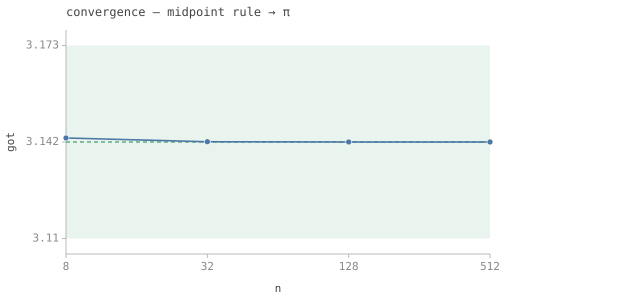
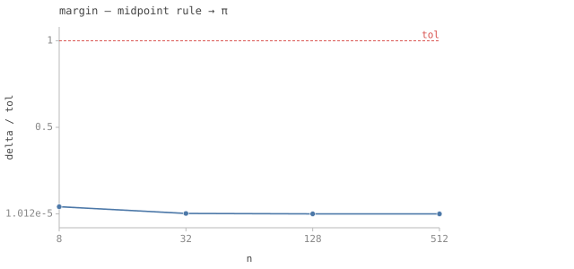

4/4 passed · 0.26s
test_report_demo.jl 4/4 PASS
| id | label | got | want | Δ vs tol (kind) | |
|---|---|---|---|---|---|
| ✓ | t633 | midpoint rule → π [n = 8] | 3.142894729591689 | 3.141592653589793 | 0.00041446366396609804 vs 0.01 (rel) |
| ✓ | t634 | midpoint rule → π [n = 32] | 3.1416740337963374 | 3.141592653589793 | 2.5904124282712304e-5 vs 0.01 (rel) |
| ✓ | t635 | midpoint rule → π [n = 128] | 3.1415977398528145 | 3.141592653589793 | 1.619007803450759e-6 vs 0.01 (rel) |
| ✓ | t636 | midpoint rule → π [n = 512] | 3.1415929714812307 | 3.141592653589793 | 1.0118798732693797e-7 vs 0.01 (rel) |
 ⤓ download
⤓ download
Sec. 193. midpoint rule → π (a convergence study) (2)
The midpoint rule for the integral of 4/(1+x^2) on [0,1] converges to π as O(1/n²). The report shows the estimate approaching π and the tolerance budget shrinking — from the numbers the suite already computed, with no figure code.

⤓ download{kind=link}
midpoint rule → π over the swept axis n. Dashed line = want; the shaded band is the tolerance; a red marker is a failed check.
⤓ download{kind=link}
delta/tol of midpoint rule → π over n; the dashed line at 1.0 is the pass/fail boundary.